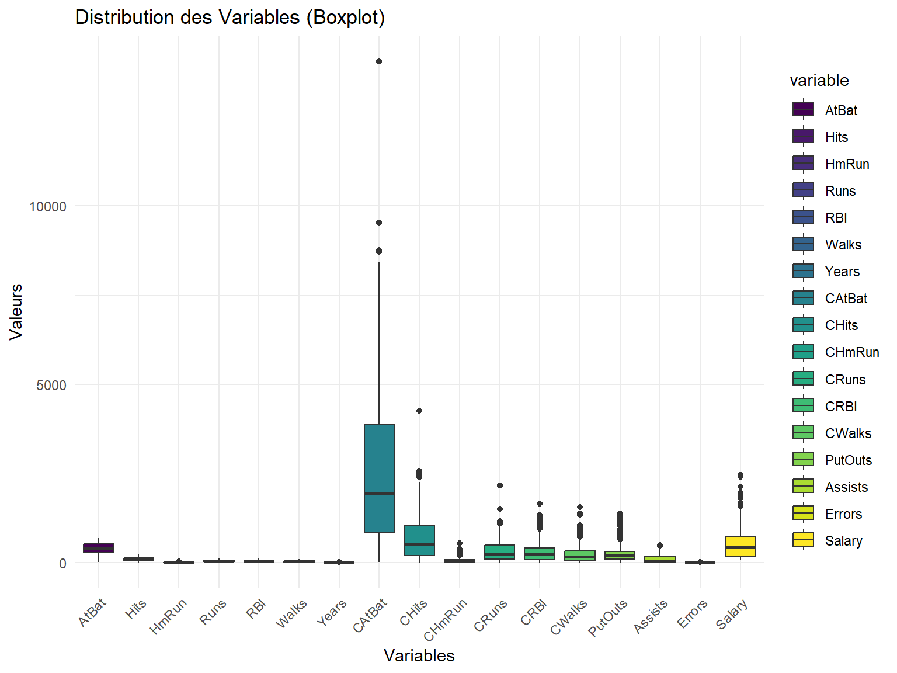
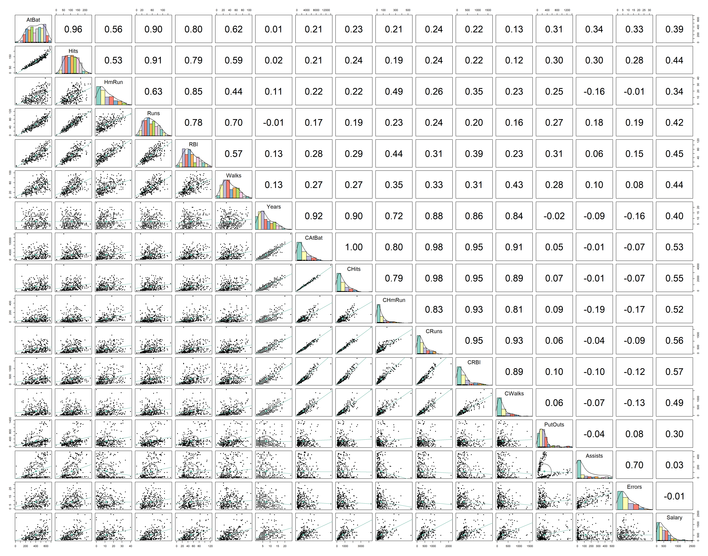
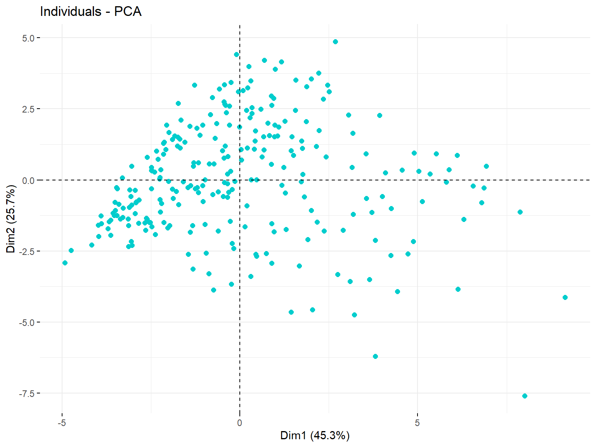
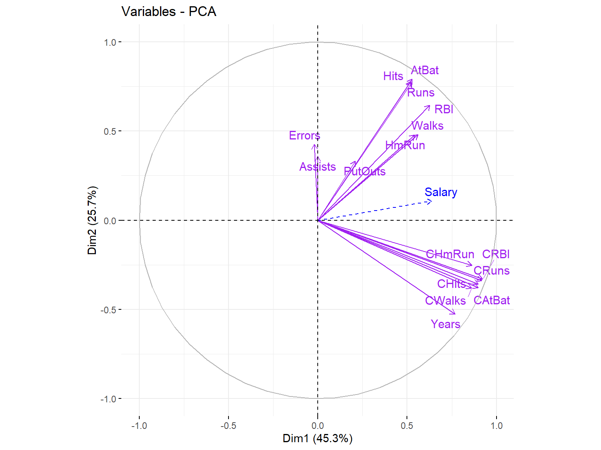
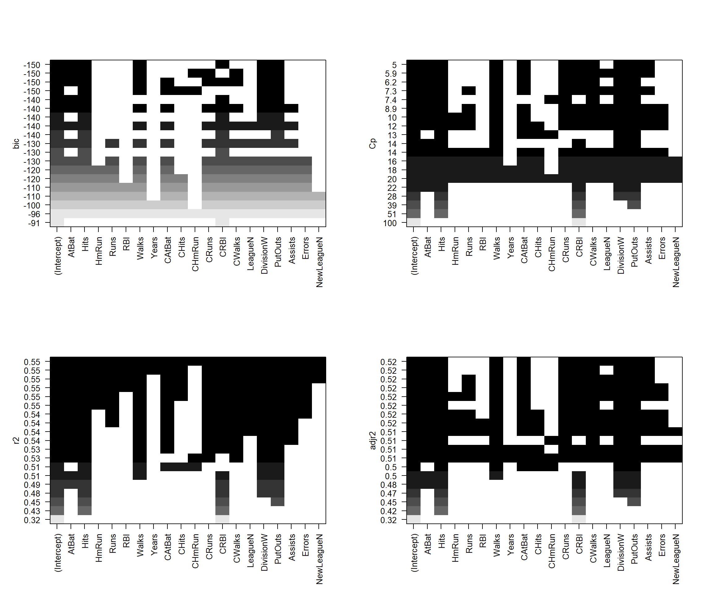
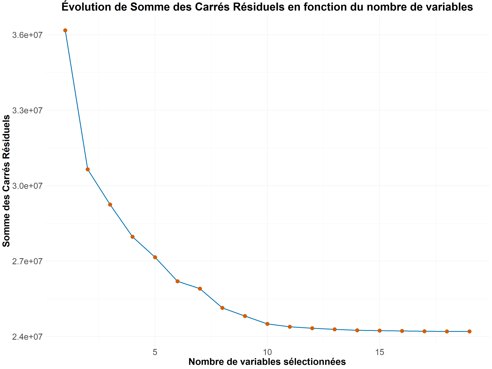
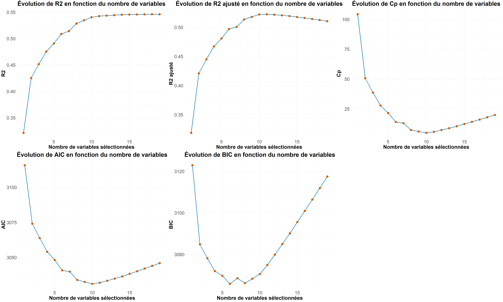
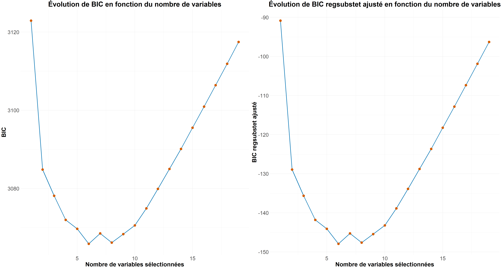
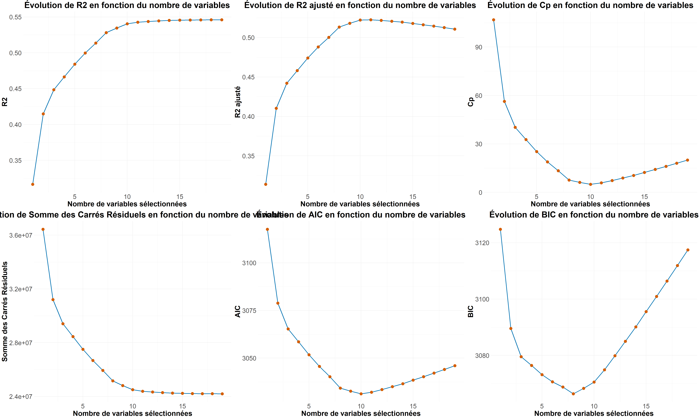
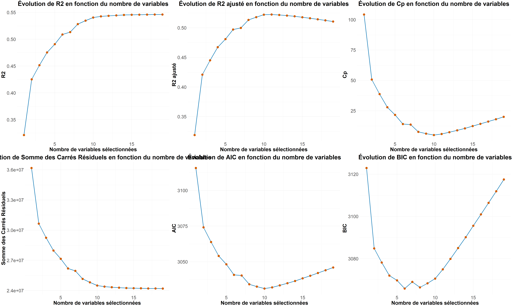

library(ISLR) # Hitters data
library(leaps) # regsubsets
library(MASS)
library(GGally) # pour ggcorr
library(car) # pour VIF
library(dplyr)
library(DT)
## Summary
library(rstatix)
library(tibble)
## PCA
library(FactoMineR)
library(factoextra)
# Plots
library(ggplot2)
library(reshape2) # Pour transformer les données en format long
library(gridExtra)
## for pairs panel
library(psych)
library(RColorBrewer)Exercice 1
TP
Setup
r2_fun <- function(y, SCR){
# r2 = SSE/SST = (SST - SSR)/SST = 1 - ssr/sst
SCT <- sum((y - mean(y) )^2)
r2 <- 1 - SCR/SCT
return(r2)
}
r2a_fun <- function(y, SCR){
n <- dim(Hitters_Without_NA)[1]
p <- 1:(dim(Hitters_Without_NA)[2]-1)
SCT <- sum((y - mean(y) )^2)
r2a <- 1 - (SCR/(n-(p+1)))/(SCT/(n-1))
return(r2a)
}
cp_fun <- function(mod, SCR){
sig <- summary(mod)$sigma
n <- dim(Hitters_Without_NA)[1]
p <- 1:(dim(Hitters_Without_NA)[2]-1)
cp <- SCR/sig^2 + 2*(p+1) - n
return(cp)
}
aic_fun <- function(SCR){
n <- dim(Hitters_Without_NA)[1]
p <- 1:(dim(Hitters_Without_NA)[2]-1)
aic <- n * log(SCR/n) + 2*(p+1)
return(aic)
}
bic_fun <- function(SCR){
n <- dim(Hitters_Without_NA)[1]
p <- 1:(dim(Hitters_Without_NA)[2]-1)
bic <- n * log(SCR/n) + log(n)*(p+1)
return(bic)
}Criteria_plot <- function(Criteria, crit_name = "Critère") {
# Création d'un data frame pour ggplot
df_criteria <- data.frame(
nb_var = seq_along(Criteria), # Nombre de variables utilisées
Criteria = Criteria # Valeurs du critère (RSS, AIC, BIC, etc.)
)
# Création du plot avec ggplot2
g <- ggplot(df_criteria, aes(x = nb_var, y = Criteria)) +
geom_line(color = "#0072B2", linewidth = 1) +
geom_point(color = "#D55E00", size = 4) +
labs(
title = paste("Évolution de", crit_name, "en fonction du nombre de variables"),
x = "Nombre de variables sélectionnées",
y = crit_name
) +
theme_minimal() +
theme(
plot.title = element_text(hjust = 0.5, face = "bold", size = 26), # Titre centré et agrandi
axis.title.x = element_text(face = "bold", size = 22),
axis.title.y = element_text(face = "bold", size = 22),
axis.text = element_text(size = 20)
)
return(g)
}Données
On étudie le jeu de données Hitters disponible dans la libraire { ISLR } de R.
Il s’agit d’un je de données de la Major League Baseball provenant des saisons de 1986 et 1987.
# ?Hitters
Hitters %>%
dim()[1] 322 20Hitters %>%
summary() AtBat Hits HmRun Runs
Min. : 16.0 Min. : 1 Min. : 0.00 Min. : 0.00
1st Qu.:255.2 1st Qu.: 64 1st Qu.: 4.00 1st Qu.: 30.25
Median :379.5 Median : 96 Median : 8.00 Median : 48.00
Mean :380.9 Mean :101 Mean :10.77 Mean : 50.91
3rd Qu.:512.0 3rd Qu.:137 3rd Qu.:16.00 3rd Qu.: 69.00
Max. :687.0 Max. :238 Max. :40.00 Max. :130.00
RBI Walks Years CAtBat
Min. : 0.00 Min. : 0.00 Min. : 1.000 Min. : 19.0
1st Qu.: 28.00 1st Qu.: 22.00 1st Qu.: 4.000 1st Qu.: 816.8
Median : 44.00 Median : 35.00 Median : 6.000 Median : 1928.0
Mean : 48.03 Mean : 38.74 Mean : 7.444 Mean : 2648.7
3rd Qu.: 64.75 3rd Qu.: 53.00 3rd Qu.:11.000 3rd Qu.: 3924.2
Max. :121.00 Max. :105.00 Max. :24.000 Max. :14053.0
CHits CHmRun CRuns CRBI
Min. : 4.0 Min. : 0.00 Min. : 1.0 Min. : 0.00
1st Qu.: 209.0 1st Qu.: 14.00 1st Qu.: 100.2 1st Qu.: 88.75
Median : 508.0 Median : 37.50 Median : 247.0 Median : 220.50
Mean : 717.6 Mean : 69.49 Mean : 358.8 Mean : 330.12
3rd Qu.:1059.2 3rd Qu.: 90.00 3rd Qu.: 526.2 3rd Qu.: 426.25
Max. :4256.0 Max. :548.00 Max. :2165.0 Max. :1659.00
CWalks League Division PutOuts Assists
Min. : 0.00 A:175 E:157 Min. : 0.0 Min. : 0.0
1st Qu.: 67.25 N:147 W:165 1st Qu.: 109.2 1st Qu.: 7.0
Median : 170.50 Median : 212.0 Median : 39.5
Mean : 260.24 Mean : 288.9 Mean :106.9
3rd Qu.: 339.25 3rd Qu.: 325.0 3rd Qu.:166.0
Max. :1566.00 Max. :1378.0 Max. :492.0
Errors Salary NewLeague
Min. : 0.00 Min. : 67.5 A:176
1st Qu.: 3.00 1st Qu.: 190.0 N:146
Median : 6.00 Median : 425.0
Mean : 8.04 Mean : 535.9
3rd Qu.:11.00 3rd Qu.: 750.0
Max. :32.00 Max. :2460.0
NA's :59
Warning
On peut déjà remarquer la présence de 59 valeurs manquantes pour la variable Salary.
On va donc commencer par s’en débarasser (il ne s’agit que de 59 lignes sur 322). Puis on va également se concentrer sur les variables quantitatives .
Hitters_Without_NA <- Hitters %>% na.omit()
Hitters_Without_NA_quant <- Hitters_Without_NA %>% subset(, select = -c(League, Division, NewLeague))
Hitters_Without_NA_quant %>% dim()[1] 263 17Analyse descriptive
On peut regarder un peu la distribution de nos différents variables quantitatives via des boxplots.
# Transformer les données en format long pour ggplot
Hitters_long <- melt(Hitters_Without_NA_quant)
ggplot(Hitters_long, aes(x = variable, y = value, fill = variable)) +
geom_boxplot() +
scale_fill_viridis_d() + # Palette de couleurs harmonieuse
labs(title = "Distribution des Variables (Boxplot)",
x = "Variables",
y = "Valeurs") +
theme_minimal() + # Thème épuré
theme(axis.text.x = element_text(angle = 45, hjust = 1)) # Rotation des étiquettes
On peut remarquer que nos variables ont en général peut de valeurs outliers.
On regarde ici la corrélation calculée entre chacune de nos variables.
pairs.panels(
Hitters_Without_NA_quant,
method = "pearson", # Méthode de corrélation
hist.col = brewer.pal(9, "Set3"), # Couleurs des histogrammes
density = TRUE, # Ajout des courbes de densité
ellipses = TRUE, # Ajout d'ellipses
smooth = TRUE, # Ajout de régressions lissées
lm = TRUE, # Ajout des droites de régression
col = "#69b3a2", # Couleur des points
alpha = 0.5 # Transparence
)
On voit la présence de plusieurs fortes corrélations qui peut déjà nous alerter si l’on veut faire des modèles de regressions linéaires car on risque d’avoir un problème de colinéarité entre les varibales explicatives.
Avec une Analyse en Composantes Principales (PCA) on peut regarder un peu le comportement de nos données.
En effet, Cette méthode respose sur la transformation des variables d’origine en nouvelles variables non corrélées, appelées composantes principales, qui capturent successivement la plus grande variance possible des données.
res_pca <- PCA(Hitters_Without_NA,
quali.sup = c(which(colnames(Hitters_Without_NA) %in% c("League", "Division", "NewLeague"))),
quanti.sup = which(colnames(Hitters_Without_NA) == "Salary"),
graph = FALSE)Ici, on spécifi nos varibales qualitatives et on décide de mettre la variable Salary en variable supplémentaire, ce qui veut d’ire qu’elle ne sera pas considéré pour la formation de nos composantes principales (variable que l’on cherchera à estimer plus tard).
Le plan des individus est une projection des observations (dans notre cas, les joueurs de baseball) sur les axes principaux de la PCA. Cette visualisation permet d’identifier des regroupements, tendances et anomalies au sein des données.
Ainsi, des individus proches sur le graphique ont des caractéristiques similaires par rapport aux variables utilisées.
Puis, le placement d’un individu en fonction des axes peut permettre de savoir comment le jouer se caractérise par rapport aux variables qui contribuent le plus à ces axes.
fviz_pca_ind(res_pca,
label = "none", # Supprime les noms des individus
pointsize = 2, # Taille des points
col.ind = "cyan3")
Ici, on voit que les joueurs se répartissent bien sur le plan ce qui témoignent de la présence d’une grande variété de type de joueurs.
Le cercle des variables est une représentation graphique qui permet d’analyser les relations entre les variables initiales et les composantes principales qui forment nos axes. Il est basé sur les corrélations entre les variables et les axes principaux.
Ainsi, plus une variable est proche du bord du cercle, plus elle est bien représentée sur le plan factoriel et contribue fortement à la formation des axes.
De plus, selon l’angle entre deux varibles, on peut faire des suppositions sur leur corrélation :
Si deux variables ont des vecteurs proches (petit angle), elles sont fortement corrélées positivement
Si deux variables ont des vecteurs opposés (angle proche de 180°), elles sont corrélées négativement
Si l’angle est proche de 90°, alors les variables ne sont pas corrélées
fviz_pca_var(res_pca,
col.var = "purple",
repel = TRUE)
Dans notre cas, ce que l’on peut voir c’est que la majorité de nos variables sont bien représentées par nos deux axes (cumulant plus de 70% d’explication). Mais beaucoup semblent aussi fortement corrélées avecla formation de deux groupes et la variable Salary se trouvant au milieu. Cette corrélation ayant déjà pu être observé précédemment.
Analyse inférentielle
On désire modéliser le salaire Salary en fonction des variables disponibles.
On va donc ajuster un modèle de régression linéaire en utilisant toutes les variables à disposition et analyser la qualité de cet ajustement.
mod1 <- lm(formula = Salary ~ .,
Hitters_Without_NA)
mod1 %>% summary()
Call:
lm(formula = Salary ~ ., data = Hitters_Without_NA)
Residuals:
Min 1Q Median 3Q Max
-907.62 -178.35 -31.11 139.09 1877.04
Coefficients:
Estimate Std. Error t value Pr(>|t|)
(Intercept) 163.10359 90.77854 1.797 0.073622 .
AtBat -1.97987 0.63398 -3.123 0.002008 **
Hits 7.50077 2.37753 3.155 0.001808 **
HmRun 4.33088 6.20145 0.698 0.485616
Runs -2.37621 2.98076 -0.797 0.426122
RBI -1.04496 2.60088 -0.402 0.688204
Walks 6.23129 1.82850 3.408 0.000766 ***
Years -3.48905 12.41219 -0.281 0.778874
CAtBat -0.17134 0.13524 -1.267 0.206380
CHits 0.13399 0.67455 0.199 0.842713
CHmRun -0.17286 1.61724 -0.107 0.914967
CRuns 1.45430 0.75046 1.938 0.053795 .
CRBI 0.80771 0.69262 1.166 0.244691
CWalks -0.81157 0.32808 -2.474 0.014057 *
LeagueN 62.59942 79.26140 0.790 0.430424
DivisionW -116.84925 40.36695 -2.895 0.004141 **
PutOuts 0.28189 0.07744 3.640 0.000333 ***
Assists 0.37107 0.22120 1.678 0.094723 .
Errors -3.36076 4.39163 -0.765 0.444857
NewLeagueN -24.76233 79.00263 -0.313 0.754218
---
Signif. codes: 0 '***' 0.001 '**' 0.01 '*' 0.05 '.' 0.1 ' ' 1
Residual standard error: 315.6 on 243 degrees of freedom
Multiple R-squared: 0.5461, Adjusted R-squared: 0.5106
F-statistic: 15.39 on 19 and 243 DF, p-value: < 2.2e-16
Note
Nous sommes sur un modèle comprenant des variables quantitatives et qualitative ce qui le rapproche d’une modélisation ANOVA.
Quelques commentaires sur le modèle :
beaucoup de variables ont un effet non significatif
le \(R^2\) et le \(R^2_{adjusted}\) sont autour de 0.5 ce qui témoigne d’une mauvaise qualité d’ajustament du modèle
l’écart type résiduel est de 315.6 ce qui est assez important et témoigne d’un modèle peu précis
Pour tenter de trouver un meilleur ajustment, il est important d’analyser d’avantage le lien entre toutes les variables explicatives. On utilise alors comunément le VIF
vif(mod1) AtBat Hits HmRun Runs RBI Walks Years
22.944366 30.281255 7.758668 15.246418 11.921715 4.148712 9.313280
CAtBat CHits CHmRun CRuns CRBI CWalks League
251.561160 502.954289 46.488462 162.520810 131.965858 19.744105 4.134115
Division PutOuts Assists Errors NewLeague
1.075398 1.236317 2.709341 2.214543 4.099063 On remarque ainsi que beaucoup de valeurs sont supérieur à 10 ce qui s’interprète communément comme la précence d’une forte colinéarité sur nos variables explicatives.
Cette colinéarité se constatait déjà durant les analyses descriptive via les graphes de corrélations (d’où l’importance de ne pas se lancer trop rapidement dans les analyses inférentielles).
Maintenant, on va donc tenter de trouver le meilleur sous-modèle possible. Pour cela on va suivre la procédure suivante :
mettre en oeuvre une méthode de sélection automatique exhaustive et observer l’évolution des SCR (Sommes de Carrés Résiduels) pour les modèles retenus en fonction de leur taille.
déduire de ces SCR le \(R^2\), \(R^2_{adjusted}\), AIC, BIC et \(C_p\) correspondants. Les comparer avec les valeurs fournies dans le summary de regsubsets et tracer leur évolution en fonction de la taille du modèle.
Puis reproduire la même procédure avec des séléctions backward, forward et stepwise
Note
Un rappel sur nos critère se trouve dans la partie Setup, onglet fonction, de ce document avec la création de fonction pour les calculés.
selec_auto <- regsubsets(Salary~.,
Hitters_Without_NA,
method = "exhaustive",
nvmax = 19 # maximum size of subsets to examine
)
# selec_auto %>% summary()On va déjà commencer par regarder la valeur du critère en fonction des variables des différents modèles testés.
par(mfrow=c(2,2))
plot(selec_auto, scale = 'bic')
plot(selec_auto, scale = 'Cp')
plot(selec_auto, scale = 'r2')
plot(selec_auto, scale = 'adjr2') 
par(mfrow=c(1,1))Ici on remarque clairement que toutes nos variables ne sont pas gardés lorsque l’on cherche à optimiser nos critères.
Aussi, on peut voir encore de faibles valeurs pour les \(R^2\) et \(R^2_{adjusted}\) pouvant témoignés d’un mauvais ajustement de modèle.
Note
plot.regsubsets() de leaps ne prend pas directement “aic” comme option de scale. Pour une sélection basée sur AIC, une approche alternative consiste à utiliser la fonction stepAIC() du package MASS, qui permet une sélection pas à pas basée sur AIC.
Regardons un peut l’évolution de la Somme des Carrés Résiduels (SCR).
SCR <- summary(selec_auto)$rss
Criteria_plot(SCR, crit_name = "Somme des Carrés Résiduels")
Maintenant regardons les autres critères mentionné précédemment
r2 <- r2_fun(Hitters_Without_NA$Salary, SCR)
r2a <- r2a_fun(Hitters_Without_NA$Salary, SCR)
cp <- cp_fun(mod1, SCR)
aic <- aic_fun(SCR)
bic <- bic_fun(SCR)
grid.arrange(Criteria_plot(r2, crit_name = "R2"),
Criteria_plot(r2a, crit_name = "R2 ajusté"),
Criteria_plot(cp, crit_name = "Cp"),
Criteria_plot(aic, crit_name = "AIC"),
Criteria_plot(bic, crit_name = "BIC"),
ncol = 3)
On peut ainsi voir que ce sont plutot des modèles entre 5 et 10 variables qui optimisent nos critères (donc pas un modèle avec toutes nos variables).
Regardons donc pour chaque critère quel est le modèle qui resort comme le meilleur
best_model_r2 <- which.max(r2)
selected_vars <- summary(selec_auto)$which[best_model_r2,]
cat("Meilleur modèle selon R2 : Modèle avec", best_model_r2, "variables\n")Meilleur modèle selon R2 : Modèle avec 19 variablesrownames(as.data.frame(selected_vars)[as.data.frame(selected_vars)[, 1] == TRUE, , drop = FALSE]) [1] "(Intercept)" "AtBat" "Hits" "HmRun" "Runs"
[6] "RBI" "Walks" "Years" "CAtBat" "CHits"
[11] "CHmRun" "CRuns" "CRBI" "CWalks" "LeagueN"
[16] "DivisionW" "PutOuts" "Assists" "Errors" "NewLeagueN" best_model_r2a <- which.max(r2a)
selected_vars <- summary(selec_auto)$which[best_model_r2a,]
cat("Meilleur modèle selon AIC : Modèle avec", best_model_r2a, "variables\n")Meilleur modèle selon AIC : Modèle avec 11 variablesrownames(as.data.frame(selected_vars)[as.data.frame(selected_vars)[, 1] == TRUE, , drop = FALSE]) [1] "(Intercept)" "AtBat" "Hits" "Walks" "CAtBat"
[6] "CRuns" "CRBI" "CWalks" "LeagueN" "DivisionW"
[11] "PutOuts" "Assists" best_model_cp <- which.min(cp)
selected_vars <- summary(selec_auto)$which[best_model_cp,]
cat("Meilleur modèle selon AIC : Modèle avec", best_model_cp, "variables\n")Meilleur modèle selon AIC : Modèle avec 10 variablesrownames(as.data.frame(selected_vars)[as.data.frame(selected_vars)[, 1] == TRUE, , drop = FALSE]) [1] "(Intercept)" "AtBat" "Hits" "Walks" "CAtBat"
[6] "CRuns" "CRBI" "CWalks" "DivisionW" "PutOuts"
[11] "Assists" best_model_aic <- which.min(aic)
selected_vars <- summary(selec_auto)$which[best_model_aic,]
cat("Meilleur modèle selon AIC : Modèle avec", best_model_aic, "variables\n")Meilleur modèle selon AIC : Modèle avec 10 variablesrownames(as.data.frame(selected_vars)[as.data.frame(selected_vars)[, 1] == TRUE, , drop = FALSE]) [1] "(Intercept)" "AtBat" "Hits" "Walks" "CAtBat"
[6] "CRuns" "CRBI" "CWalks" "DivisionW" "PutOuts"
[11] "Assists" best_model_bic <- which.min(bic)
selected_vars <- summary(selec_auto)$which[best_model_bic,]
cat("Meilleur modèle selon BIC : Modèle avec", best_model_bic, "variables\n")Meilleur modèle selon BIC : Modèle avec 6 variablesrownames(as.data.frame(selected_vars)[as.data.frame(selected_vars)[, 1] == TRUE, , drop = FALSE])[1] "(Intercept)" "AtBat" "Hits" "Walks" "CRBI"
[6] "DivisionW" "PutOuts" Pour finir, comparons un peut les critères que nous avons calculés avec ceux que l’on peut récupérer via le summary de regsubset (pour tous sauf l’AIC qui n’est pas présent).
Pour cela regardons si nous avons régulièrement la valeur 0 (ou valeur proche) :
round(r2-summary(selec_auto)$rsq) %>% mean()[1] 0round(r2a-summary(selec_auto)$adjr2) %>% mean()[1] 0round(cp-summary(selec_auto)$cp) %>% mean()[1] 0round(bic-summary(selec_auto)$bic) %>% mean()[1] 3214on voit une grosse différence seulement pour le BIC donc regardons plus en détail.
grid.arrange(Criteria_plot(bic, crit_name = "BIC"),
Criteria_plot(summary(selec_auto)$bic, crit_name = "BIC regsubstet ajusté"),
ncol = 2)
On voit que les valeurs sont différentes mais en fait le comportement est identique. Ce qui veut dire que la différence est seulement due à une constant multiplicative près.
Cette fois ci on va regarder en sélection backward. D’abord, on fait à nouveau avec la fonction regsubset.
selec_back <- regsubsets(Salary~.,
Hitters_Without_NA,
method = "backward",
nvmax = 19)SCR <- summary(selec_back)$rss
r2 <- r2_fun(Hitters_Without_NA$Salary, SCR)
r2a <- r2a_fun(Hitters_Without_NA$Salary, SCR)
cp <- cp_fun(mod1, SCR)
aic <- aic_fun(SCR)
bic <- bic_fun(SCR)
grid.arrange(Criteria_plot(r2, crit_name = "R2"),
Criteria_plot(r2a, crit_name = "R2 ajusté"),
Criteria_plot(cp, crit_name = "Cp"),
Criteria_plot(SCR, crit_name = "Somme des Carrés Résiduels"),
Criteria_plot(aic, crit_name = "AIC"),
Criteria_plot(bic, crit_name = "BIC"),
ncol = 3)
On peut également utiliser la fonction step de la library { stats }. Pour cela, on part du plus gros modèle défini précédemment par mod1.
n <- dim(Hitters_Without_NA)[1]
modselect_back_bic <- step(mod1,
scope = formula(mod1),
trace = FALSE, # trace = TRUE permet de voir le détail des étapes
direction = c("backward"),
k = log(n) # BIC selection
)Puis on peut regarder le modèle qui optimise le critère utilisé pour la selection.
modselect_back_bic %>% summary()
Call:
lm(formula = Salary ~ AtBat + Hits + Walks + CRuns + CRBI + CWalks +
Division + PutOuts, data = Hitters_Without_NA)
Residuals:
Min 1Q Median 3Q Max
-794.06 -171.94 -28.48 133.36 2017.83
Coefficients:
Estimate Std. Error t value Pr(>|t|)
(Intercept) 117.15204 65.07016 1.800 0.072985 .
AtBat -2.03392 0.52282 -3.890 0.000128 ***
Hits 6.85491 1.65215 4.149 4.56e-05 ***
Walks 6.44066 1.52212 4.231 3.25e-05 ***
CRuns 0.70454 0.24869 2.833 0.004981 **
CRBI 0.52732 0.18861 2.796 0.005572 **
CWalks -0.80661 0.26395 -3.056 0.002483 **
DivisionW -123.77984 39.28749 -3.151 0.001824 **
PutOuts 0.27539 0.07431 3.706 0.000259 ***
---
Signif. codes: 0 '***' 0.001 '**' 0.01 '*' 0.05 '.' 0.1 ' ' 1
Residual standard error: 314.7 on 254 degrees of freedom
Multiple R-squared: 0.5281, Adjusted R-squared: 0.5133
F-statistic: 35.54 on 8 and 254 DF, p-value: < 2.2e-16La fonction step propose aussi une selection avec AIC et Cp.
- AIC
modselect_back_aic <- step(mod1,
scope = formula(mod1),
trace = FALSE,
direction = c("backward"),
k = 2 # AIC selection
)
modselect_back_aic %>% summary()
Call:
lm(formula = Salary ~ AtBat + Hits + Walks + CAtBat + CRuns +
CRBI + CWalks + Division + PutOuts + Assists, data = Hitters_Without_NA)
Residuals:
Min 1Q Median 3Q Max
-939.11 -176.87 -34.08 130.90 1910.55
Coefficients:
Estimate Std. Error t value Pr(>|t|)
(Intercept) 162.53544 66.90784 2.429 0.015830 *
AtBat -2.16865 0.53630 -4.044 7.00e-05 ***
Hits 6.91802 1.64665 4.201 3.69e-05 ***
Walks 5.77322 1.58483 3.643 0.000327 ***
CAtBat -0.13008 0.05550 -2.344 0.019858 *
CRuns 1.40825 0.39040 3.607 0.000373 ***
CRBI 0.77431 0.20961 3.694 0.000271 ***
CWalks -0.83083 0.26359 -3.152 0.001818 **
DivisionW -112.38006 39.21438 -2.866 0.004511 **
PutOuts 0.29737 0.07444 3.995 8.50e-05 ***
Assists 0.28317 0.15766 1.796 0.073673 .
---
Signif. codes: 0 '***' 0.001 '**' 0.01 '*' 0.05 '.' 0.1 ' ' 1
Residual standard error: 311.8 on 252 degrees of freedom
Multiple R-squared: 0.5405, Adjusted R-squared: 0.5223
F-statistic: 29.64 on 10 and 252 DF, p-value: < 2.2e-16- \(C_p\)
modselect_back_cp <- step(mod1,
scope = formula(mod1),
trace = FALSE,
direction = c("backward"),
k = 1 # Cp selection
)
modselect_back_cp %>% summary()
Call:
lm(formula = Salary ~ AtBat + Hits + Walks + CAtBat + CRuns +
CRBI + CWalks + League + Division + PutOuts + Assists, data = Hitters_Without_NA)
Residuals:
Min 1Q Median 3Q Max
-932.2 -175.4 -29.2 130.4 1897.2
Coefficients:
Estimate Std. Error t value Pr(>|t|)
(Intercept) 135.75122 71.34623 1.903 0.058223 .
AtBat -2.12775 0.53746 -3.959 9.81e-05 ***
Hits 6.92370 1.64612 4.206 3.62e-05 ***
Walks 5.62028 1.59064 3.533 0.000488 ***
CAtBat -0.13899 0.05609 -2.478 0.013870 *
CRuns 1.45533 0.39270 3.706 0.000259 ***
CRBI 0.78525 0.20978 3.743 0.000225 ***
CWalks -0.82286 0.26361 -3.121 0.002010 **
LeagueN 43.11162 39.96612 1.079 0.281755
DivisionW -111.14603 39.21835 -2.834 0.004970 **
PutOuts 0.28941 0.07478 3.870 0.000139 ***
Assists 0.26883 0.15816 1.700 0.090430 .
---
Signif. codes: 0 '***' 0.001 '**' 0.01 '*' 0.05 '.' 0.1 ' ' 1
Residual standard error: 311.7 on 251 degrees of freedom
Multiple R-squared: 0.5426, Adjusted R-squared: 0.5226
F-statistic: 27.07 on 11 and 251 DF, p-value: < 2.2e-16On voit que parmi nos modèles, le BIC semble le plus parcimonieux mais de manière général on constate encore des valeurs de \(R^2\) et \(R^2_{adjusted}\) assez faibles.
Cette fois ci on va regarder en sélection forward. D’abord, on fait à nouveau avec la fonction regsubset.
selec_forw <- regsubsets(Salary~.,
Hitters_Without_NA,
method = "forward",
nvmax = 19)SCR <- summary(selec_forw)$rss
r2 <- r2_fun(Hitters_Without_NA$Salary, SCR)
r2a <- r2a_fun(Hitters_Without_NA$Salary, SCR)
cp <- cp_fun(mod1, SCR)
aic <- aic_fun(SCR)
bic <- bic_fun(SCR)
grid.arrange(Criteria_plot(r2, crit_name = "R2"),
Criteria_plot(r2a, crit_name = "R2 ajusté"),
Criteria_plot(cp, crit_name = "Cp"),
Criteria_plot(SCR, crit_name = "Somme des Carrés Résiduels"),
Criteria_plot(aic, crit_name = "AIC"),
Criteria_plot(bic, crit_name = "BIC"),
ncol = 3)
On peut également utiliser la fonction step de la library { stats }. Cette fois ci il faut définir en modèle de départ le plus petit modèle (celui composé seulement de l’intercept).
mod0 <- lm(Salary~1,
Hitters_Without_NA)
modselect_forw_bic <- step(mod0,
scope = formula(mod1),
trace = FALSE, # trace = TRUE permet de voir le détail des étapes
direction = c("forward"),
k = log(n) # BIC selection
)Puis on peut regarder le modèle qui optimise le critère utilisé pour la selection.
modselect_forw_bic %>% summary()
Call:
lm(formula = Salary ~ CRBI + Hits + PutOuts + Division + AtBat +
Walks, data = Hitters_Without_NA)
Residuals:
Min 1Q Median 3Q Max
-873.11 -181.72 -25.91 141.77 2040.47
Coefficients:
Estimate Std. Error t value Pr(>|t|)
(Intercept) 91.51180 65.00006 1.408 0.160382
CRBI 0.64302 0.06443 9.979 < 2e-16 ***
Hits 7.60440 1.66254 4.574 7.46e-06 ***
PutOuts 0.26431 0.07477 3.535 0.000484 ***
DivisionW -122.95153 39.82029 -3.088 0.002239 **
AtBat -1.86859 0.52742 -3.543 0.000470 ***
Walks 3.69765 1.21036 3.055 0.002488 **
---
Signif. codes: 0 '***' 0.001 '**' 0.01 '*' 0.05 '.' 0.1 ' ' 1
Residual standard error: 319.9 on 256 degrees of freedom
Multiple R-squared: 0.5087, Adjusted R-squared: 0.4972
F-statistic: 44.18 on 6 and 256 DF, p-value: < 2.2e-16La fonction step propose aussi une selection avec AIC et Cp.
- AIC
modselect_forw_aic <- step(mod0,
scope = formula(mod1),
trace = FALSE,
direction = c("forward"),
k = 2 # AIC selection
)
modselect_forw_aic %>% summary()
Call:
lm(formula = Salary ~ CRBI + Hits + PutOuts + Division + AtBat +
Walks + CWalks + CRuns + CAtBat + Assists, data = Hitters_Without_NA)
Residuals:
Min 1Q Median 3Q Max
-939.11 -176.87 -34.08 130.90 1910.55
Coefficients:
Estimate Std. Error t value Pr(>|t|)
(Intercept) 162.53544 66.90784 2.429 0.015830 *
CRBI 0.77431 0.20961 3.694 0.000271 ***
Hits 6.91802 1.64665 4.201 3.69e-05 ***
PutOuts 0.29737 0.07444 3.995 8.50e-05 ***
DivisionW -112.38006 39.21438 -2.866 0.004511 **
AtBat -2.16865 0.53630 -4.044 7.00e-05 ***
Walks 5.77322 1.58483 3.643 0.000327 ***
CWalks -0.83083 0.26359 -3.152 0.001818 **
CRuns 1.40825 0.39040 3.607 0.000373 ***
CAtBat -0.13008 0.05550 -2.344 0.019858 *
Assists 0.28317 0.15766 1.796 0.073673 .
---
Signif. codes: 0 '***' 0.001 '**' 0.01 '*' 0.05 '.' 0.1 ' ' 1
Residual standard error: 311.8 on 252 degrees of freedom
Multiple R-squared: 0.5405, Adjusted R-squared: 0.5223
F-statistic: 29.64 on 10 and 252 DF, p-value: < 2.2e-16- \(C_p\)
modselect_forw_cp <- step(mod0,
scope = formula(mod1),
trace = FALSE,
direction = c("forward"),
k = 1 # Cp selection
)
modselect_forw_cp %>% summary()
Call:
lm(formula = Salary ~ CRBI + Hits + PutOuts + Division + AtBat +
Walks + CWalks + CRuns + CAtBat + Assists + League, data = Hitters_Without_NA)
Residuals:
Min 1Q Median 3Q Max
-932.2 -175.4 -29.2 130.4 1897.2
Coefficients:
Estimate Std. Error t value Pr(>|t|)
(Intercept) 135.75122 71.34623 1.903 0.058223 .
CRBI 0.78525 0.20978 3.743 0.000225 ***
Hits 6.92370 1.64612 4.206 3.62e-05 ***
PutOuts 0.28941 0.07478 3.870 0.000139 ***
DivisionW -111.14603 39.21835 -2.834 0.004970 **
AtBat -2.12775 0.53746 -3.959 9.81e-05 ***
Walks 5.62028 1.59064 3.533 0.000488 ***
CWalks -0.82286 0.26361 -3.121 0.002010 **
CRuns 1.45533 0.39270 3.706 0.000259 ***
CAtBat -0.13899 0.05609 -2.478 0.013870 *
Assists 0.26883 0.15816 1.700 0.090430 .
LeagueN 43.11162 39.96612 1.079 0.281755
---
Signif. codes: 0 '***' 0.001 '**' 0.01 '*' 0.05 '.' 0.1 ' ' 1
Residual standard error: 311.7 on 251 degrees of freedom
Multiple R-squared: 0.5426, Adjusted R-squared: 0.5226
F-statistic: 27.07 on 11 and 251 DF, p-value: < 2.2e-16On voit que parmi nos modèles, le BIC semble le plus parcimonieux mais de manière général on constate encore des valeurs de \(R^2\) et \(R^2_{adjusted}\) assez faibles.
Maintenant on va regarder en sélection both. On va alors utiliser la fonction step directement.
modselect_bic <- step(mod0,
scope = formula(mod1),
trace = FALSE,
direction = c("both"),
k = log(n))
modselect_bic %>% summary()
Call:
lm(formula = Salary ~ CRBI + Hits + PutOuts + Division + AtBat +
Walks, data = Hitters_Without_NA)
Residuals:
Min 1Q Median 3Q Max
-873.11 -181.72 -25.91 141.77 2040.47
Coefficients:
Estimate Std. Error t value Pr(>|t|)
(Intercept) 91.51180 65.00006 1.408 0.160382
CRBI 0.64302 0.06443 9.979 < 2e-16 ***
Hits 7.60440 1.66254 4.574 7.46e-06 ***
PutOuts 0.26431 0.07477 3.535 0.000484 ***
DivisionW -122.95153 39.82029 -3.088 0.002239 **
AtBat -1.86859 0.52742 -3.543 0.000470 ***
Walks 3.69765 1.21036 3.055 0.002488 **
---
Signif. codes: 0 '***' 0.001 '**' 0.01 '*' 0.05 '.' 0.1 ' ' 1
Residual standard error: 319.9 on 256 degrees of freedom
Multiple R-squared: 0.5087, Adjusted R-squared: 0.4972
F-statistic: 44.18 on 6 and 256 DF, p-value: < 2.2e-16modselect_aic <- step(mod0,
scope = formula(mod1),
trace = FALSE,
direction = c("both"),
k = 2)
modselect_aic %>% summary()
Call:
lm(formula = Salary ~ CRBI + Hits + PutOuts + Division + AtBat +
Walks + CWalks + CRuns + CAtBat + Assists, data = Hitters_Without_NA)
Residuals:
Min 1Q Median 3Q Max
-939.11 -176.87 -34.08 130.90 1910.55
Coefficients:
Estimate Std. Error t value Pr(>|t|)
(Intercept) 162.53544 66.90784 2.429 0.015830 *
CRBI 0.77431 0.20961 3.694 0.000271 ***
Hits 6.91802 1.64665 4.201 3.69e-05 ***
PutOuts 0.29737 0.07444 3.995 8.50e-05 ***
DivisionW -112.38006 39.21438 -2.866 0.004511 **
AtBat -2.16865 0.53630 -4.044 7.00e-05 ***
Walks 5.77322 1.58483 3.643 0.000327 ***
CWalks -0.83083 0.26359 -3.152 0.001818 **
CRuns 1.40825 0.39040 3.607 0.000373 ***
CAtBat -0.13008 0.05550 -2.344 0.019858 *
Assists 0.28317 0.15766 1.796 0.073673 .
---
Signif. codes: 0 '***' 0.001 '**' 0.01 '*' 0.05 '.' 0.1 ' ' 1
Residual standard error: 311.8 on 252 degrees of freedom
Multiple R-squared: 0.5405, Adjusted R-squared: 0.5223
F-statistic: 29.64 on 10 and 252 DF, p-value: < 2.2e-16modselect_cp <- step(mod0,
scope = formula(mod1),
trace = FALSE,
direction = c("both"),
k = 1)
modselect_cp %>% summary()
Call:
lm(formula = Salary ~ CRBI + Hits + PutOuts + Division + AtBat +
Walks + CWalks + CRuns + CAtBat + Assists + League, data = Hitters_Without_NA)
Residuals:
Min 1Q Median 3Q Max
-932.2 -175.4 -29.2 130.4 1897.2
Coefficients:
Estimate Std. Error t value Pr(>|t|)
(Intercept) 135.75122 71.34623 1.903 0.058223 .
CRBI 0.78525 0.20978 3.743 0.000225 ***
Hits 6.92370 1.64612 4.206 3.62e-05 ***
PutOuts 0.28941 0.07478 3.870 0.000139 ***
DivisionW -111.14603 39.21835 -2.834 0.004970 **
AtBat -2.12775 0.53746 -3.959 9.81e-05 ***
Walks 5.62028 1.59064 3.533 0.000488 ***
CWalks -0.82286 0.26361 -3.121 0.002010 **
CRuns 1.45533 0.39270 3.706 0.000259 ***
CAtBat -0.13899 0.05609 -2.478 0.013870 *
Assists 0.26883 0.15816 1.700 0.090430 .
LeagueN 43.11162 39.96612 1.079 0.281755
---
Signif. codes: 0 '***' 0.001 '**' 0.01 '*' 0.05 '.' 0.1 ' ' 1
Residual standard error: 311.7 on 251 degrees of freedom
Multiple R-squared: 0.5426, Adjusted R-squared: 0.5226
F-statistic: 27.07 on 11 and 251 DF, p-value: < 2.2e-16Malheuresement, même en sélection both nous avons encore des \(R^2\) et \(R^2_{adjusted}\) faibles.
Conclusion
À la lumière des résultats de notre analyse, on peut envisager le modèle both car bien qu’il n’ait pas montré de grandes améliorations en termes de \(R^2\) et \(R^2_{adjusted}\), il permet de réduire le nombre de variables tout en maintenant celles qui sont significatives. Ce modèle est donc plus parcimonieux tout en conservant des variables importantes. Cependant, une réflexion supplémentaire pourrait être menée sur l’éventuelle suppression de l’intercept, ce qui nécessiterait une validation supplémentaire.
En ce qui concerne le choix final du modèle, on peut opté pour celui qui maximise le critère BIC, ce qui nous mène à un modèle avec 6 variables. Le BIC est particulièrement utile pour privilégier un modèle plus simple et plus parcimonieux, ce qui est un atout lorsqu’on cherche à éviter un surajustement. Toutefois, il est important de noter que la qualité de l’ajustement n’est pas optimale, ce qui suggère qu’il pourrait manquer certaines informations pour expliquer pleinement la variable cible (le salaire).
Enfin, la validité interne est un aspect crucial qui n’a pas été suffisamment exploré dans cette analyse. Il aurait été pertinent de vérifier que toutes les hypothèses sous-jacentes des modèles étaient satisfaites. Cela aurait permis de renforcer la robustesse de nos résultats et de garantir que les conclusions qu’on sont fiables.
Donc, il serait pertinent d’examiner plus en profondeur la validité interne, notamment en testant les hypothèses de normalité, d’homoscédasticité, et d’indépendance des résidus.
Session info
sessioninfo::session_info(pkgs = "attached")─ Session info ───────────────────────────────────────────────────────────────
setting value
version R version 4.2.1 (2022-06-23 ucrt)
os Windows 10 x64 (build 22631)
system x86_64, mingw32
ui RTerm
language (EN)
collate French_France.utf8
ctype French_France.utf8
tz Europe/Paris
date 2025-02-17
pandoc 3.2 @ C:/Program Files/RStudio/resources/app/bin/quarto/bin/tools/ (via rmarkdown)
─ Packages ───────────────────────────────────────────────────────────────────
package * version date (UTC) lib source
car * 3.1-2 2023-03-30 [1] CRAN (R 4.2.3)
carData * 3.0-5 2022-01-06 [1] CRAN (R 4.2.1)
dplyr * 1.1.4 2023-11-17 [1] CRAN (R 4.2.3)
DT * 0.33 2024-04-04 [1] CRAN (R 4.2.3)
factoextra * 1.0.7 2020-04-01 [1] CRAN (R 4.2.1)
FactoMineR * 2.9 2023-10-12 [1] CRAN (R 4.2.3)
GGally * 2.2.1 2024-02-14 [1] CRAN (R 4.2.3)
ggplot2 * 3.5.1 2024-04-23 [1] CRAN (R 4.2.3)
gridExtra * 2.3 2017-09-09 [1] CRAN (R 4.2.1)
ISLR * 1.4 2021-09-15 [1] CRAN (R 4.2.3)
leaps * 3.1 2020-01-16 [1] CRAN (R 4.2.1)
MASS * 7.3-60 2023-05-04 [1] CRAN (R 4.2.3)
psych * 2.4.1 2024-01-18 [1] CRAN (R 4.2.3)
RColorBrewer * 1.1-3 2022-04-03 [1] CRAN (R 4.2.0)
reshape2 * 1.4.4 2020-04-09 [1] CRAN (R 4.2.1)
rstatix * 0.7.2 2023-02-01 [1] CRAN (R 4.2.1)
tibble * 3.2.1 2023-03-20 [1] CRAN (R 4.2.3)
[1] C:/Users/cleme/AppData/Local/R/win-library/4.2
[2] C:/Program Files/R/R-4.2.1/library
──────────────────────────────────────────────────────────────────────────────